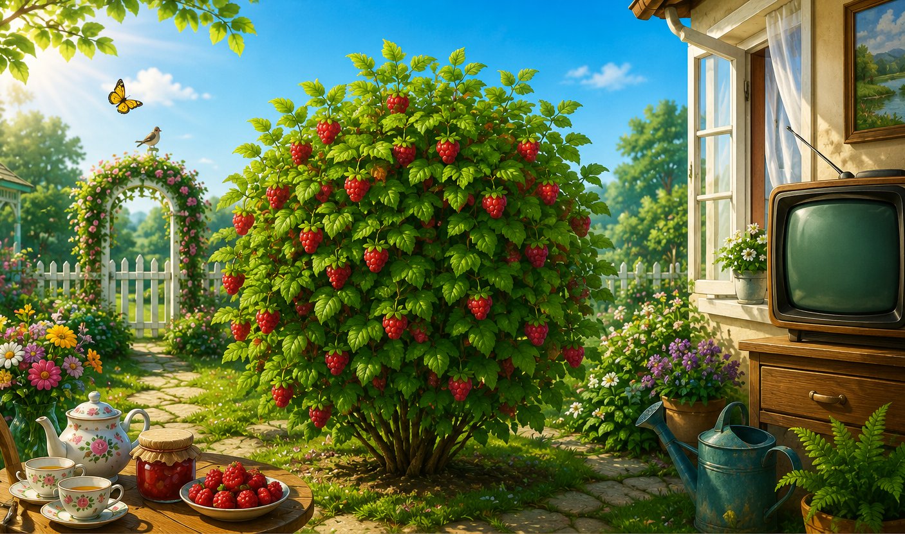

<!DOCTYPE html>
<html lang="uk">
<head>
<meta charset="UTF-8">
<title>Садок Іграшок Некса</title>

<style>
body {
    margin: 0;
    font-family: Arial, sans-serif;
    background: #f5f5f5;
    overflow: hidden;
}

.header {
    text-align: center;
    font-size: 68px;
    padding: 18px 10px;
    color: #ffffff;
    position: relative;
    z-index: 2;
    letter-spacing: 2px;
    text-shadow:
        0 0 10px rgba(255, 80, 160, 0.9),
        0 0 25px rgba(255, 60, 140, 0.7),
        0 0 45px rgba(255, 0, 120, 0.5);
    animation: floatTitle 4s ease-in-out infinite;
}

@keyframes floatTitle {
    0% { transform: translateY(0px); filter: brightness(1); }
    50% { transform: translateY(6px); filter: brightness(1.2); }
    100% { transform: translateY(0px); filter: brightness(1); }
}

.scene {
    position: fixed;
    top: 0;
    left: 0;
    width: 100vw;
    height: 100vh;
    z-index: 0;
}

.scene img {
    width: 100%;
    height: 100%;
    object-fit: cover;
}

.words {
    position: fixed;
    bottom: 20px;
    width: 100%;
    display: flex;
    justify-content: center;
    gap: 12px;
    flex-wrap: wrap;
    z-index: 3;
}

.word {
    padding: 10px 14px;
    background: #fff;
    border: 2px solid #333;
    border-radius: 10px;
    cursor: pointer;
    font-size: 18px;
}

.word:hover {
    background: #ffe08a;
}

.tv-overlay {
    display: none;
    position: fixed;
    top: 0;
    left: 0;
    width: 100%;
    height: 100%;
    background: rgba(0,0,0,0.6);
    justify-content: center;
    align-items: center;
    z-index: 10;
}

.tv {
    width: 460px;
    max-height: 80vh;
    overflow-y: auto;
    background: #111;
    border: 8px solid #444;
    border-radius: 20px;
    color: #00ffcc;
    font-size: 20px;
    padding: 20px;
}

.tv-title {
    color: #fff;
    font-size: 22px;
    margin-bottom: 10px;
}

.tv-line {
    display: flex;
    align-items: center;
    gap: 12px;
    margin: 10px 0;
}

.circle {
    width: 18px;
    height: 18px;
    border-radius: 50%;
    cursor: pointer;
    border: 2px solid white;
}

.c1 { background: #3498db; }
.c2 { background: #2ecc71; }
.c3 { background: #f1c40f; }
.c4 { background: #e74c3c; }

.close {
    position: absolute;
    top: 20px;
    right: 30px;
    color: white;
    font-size: 30px;
    cursor: pointer;
}
</style>
</head>

<body>

<div class="header">САДОК ІГРАШОК НЕКСА</div>

<div class="scene">
    
</div>

<div class="words">

    <div class="word" onclick="openTV('малина')">малина</div>
    <div class="word" onclick="openTV('збирати')">збирати</div>
    <div class="word" onclick="openTV('дерево')">дерево</div>
    <div class="word" onclick="openTV('вода')">вода</div>
    <div class="word" onclick="openTV('сонце')">сонце</div>
    <div class="word" onclick="openTV('гра')">гра</div>
    <div class="word" onclick="openTV('квітка')">квітка</div>
    <div class="word" onclick="openTV('птах')">птах</div>
    <div class="word" onclick="openTV('друзі')">друзі</div>

</div>

<div class="tv-overlay" id="overlay">
    <div class="close" onclick="closeTV()">×</div>
    <div class="tv" id="tvText"></div>
</div>

<script>

// ======================
// ОБУЧАЮЩИЕ БЛОКИ
// ======================
const translations = {
"малина": [
["малина", 1],
["малина росте", 2],
["малина червона", 3],
["малину їдять", 4]
],

"збирати": [
["збирати", 5],
["збирати малину", 6],
["збирати ягоди", 7],
["збирати свої речі", 8]
],

"дерево": [
["дерево", 9],
["дерево росте", 10],
["дерево в садку", 11],
["не чіпай дерево", 12]
],

"вода": [
["вода", 13],
["вода тече", 14],
["вода стоїть", 15],
["вода напуває", 16]
],

"сонце": [
["сонце", 17],
["сонце світить", 18],
["сонце зайшло", 19],
["ховатись від сонця", 20]
],

"гра": [
["гра", 21],
["гра в садку", 22],
["гра цікава", 23],
["гратись з друзями", 24]
],

"квітка": [
["квітка", 25],
["квітка гарна", 26],
["квітка розцвіла", 27],
["квітку подарувати", 28]
],

"птах": [
["птах", 29],
["птах літає", 30],
["птах з крилами", 31],
["дивитись на птаха", 32]
],

"друзі": [
["друзі", 33],
["друзі прийшли", 34],
["друзі гарні", 35],
["бесіда з друзями", 36]
]
};

// ======================
// ОТКРЫТИЕ СЛОВА
// ======================
function openTV(word) {
    const box = document.getElementById("tvText");
    const overlay = document.getElementById("overlay");

    let html = `<div class="tv-title">${word}</div>`;

    const lines = translations[word];

    for (let i = 0; i < lines.length; i++) {
        html += `
        <div class="tv-line">
            <div class="circle c${(i % 4) + 1}" onclick="go(${lines[i][1]})"></div>
            <div>${lines[i][0]}</div>
        </div>
        `;
    }

    box.innerHTML = html;
    overlay.style.display = "flex";
}

// ======================
// ПЕРЕХОД
// ======================
function go(index) {
    window.location.href = "perevod/chik" + index + ".html";
}
// ======================
function closeTV() {
    document.getElementById("overlay").style.display = "none";
}

</script>

</body>
</html>